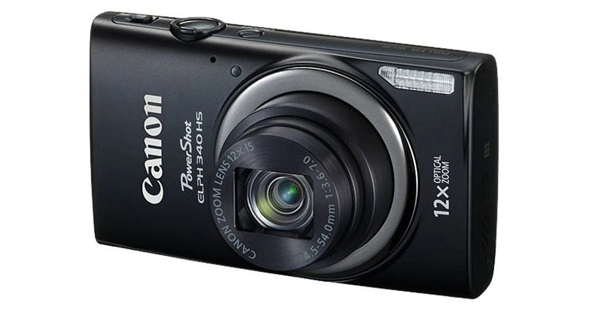

Point and Shoot Cameras
Point and shoot cameras, also known as compact cameras, are designed for effortless photography. They are small, lightweight, and built with simplicity in mind, making them ideal for casual users. These cameras feature a fixed lens, meaning you cannot change lenses, but often include a decent zoom range. Most point-and-shoot models use fully automatic settings, allowing the camera to adjust focus, exposure, and white balance without manual input from the user.
While their sensor sizes are generally smaller than DSLRs and mirrorless cameras, many modern models have image stabilization, face detection, and scene recognition to improve image quality. Some advanced models even offer basic manual controls and built-in Wi-Fi for easy photo sharing. Point and shoot cameras are perfect for users who want a hassle-free, travel-friendly camera without worrying about technical details.
Uses
- Travel photography – Lightweight and pocket-friendly for vacations
- Casual snapshots – Perfect for everyday moments and family events
- Beginner photography – Ideal for those who prefer automatic settings
Pros & Cons
Pros
- ✅ User-friendly – No complicated settings
- ✅ Compact and lightweight – Easy to carry
- ✅ Affordable – most Budget-friendly cameras